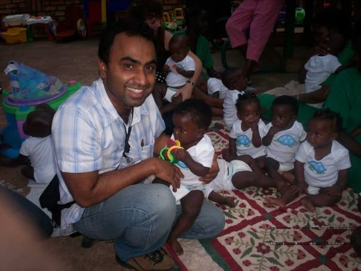
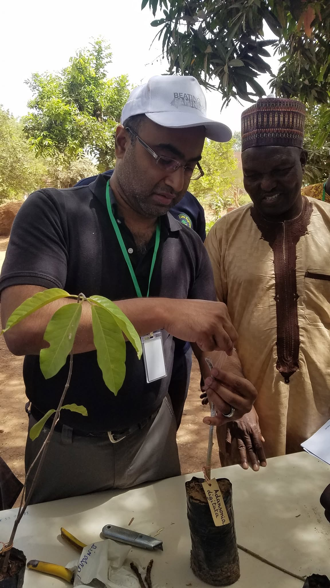

Sebastian Mathew
I connect capital, institutions, and communities to make big programs work.
Strategy, finance, and enablement across continents and three sectors.
Connect on LinkedIn (opens in a new tab)
About
I work where money, public institutions, and communities have to move together. I've raised capital for a multi-country climate program, turned around a national infrastructure agency, rebuilt how Fortune 500 sales teams talk to buyers, and trained government officials from cities and countries around the world.
My roots are in community development. I co-launched an asset-based community development network in South Africa with nonprofit leaders, government officials, and community foundations, and that way of working still shapes everything I do: start with what people already have, then build the partnerships that let it grow.
I've worked across the public, private, and nonprofit sectors, and I'm now relocating to the Washington, D.C. area.

Problems I solve
The situations people bring me into, and what happened when they did.
-
Mobilizing capital for impact
When a large climate or development program needs a finance model that investors, foundations, and funders will back.
- Oversaw a team that built a new climate finance model and raised $250M+ from asset managers, philanthropic foundations, and sovereign funds for a multi-country carbon credit program that shared value with investors and local communities.
- Secured $M+ in sponsorship commitments from major tech firms for municipal wireless conferences, helping a startup bridge the digital divide in underserved inner-city communities.
-
Turning around struggling organizations
When revenue is falling, fixed costs are too high, or a portfolio is underperforming and the board needs a plan it can approve.
- Led 20 consultants for a national infrastructure agency in business rescue, designed its PMO, and advised the C-suite on an enterprise-wide transformation: portfolio revenue up 37% over two years.
- Presented a board strategy to a national postal service that cut costs 15% without layoffs, combining flexible labor with technology.
- Built a risk/return methodology for a state energy utility that led to a board-approved restructuring of its subsidiaries, with proceeds reinvested in cross-border renewable energy.
-
Getting teams to win high-stakes conversations
When complex, high-value offerings aren't selling through traditional methods, or a message has to land with buyers, boards, or governments.
- Developed a sales enablement strategy for Fortune 500 and PE portfolio companies, built on conversation design and AI-assisted coaching: 12%+ higher win rates, 3x deal size, 17% faster close, and 25%+ faster ramp-up for new sellers.
-
Convening unlikely partners
When a program needs governments, multilaterals, corporations, scientists, and communities in the same room and pulling in the same direction.
- Brought together scientists, environmental leaders, research organizations, and global donors behind a nature-based program to restore landscapes and livelihoods, which became the world's largest program of its kind within five years.
- Invited senior Chinese airport and civil aviation officials to the U.S. and co-designed a mega-event security preparedness exchange with the largest U.S. airport, the FAA, federal security agencies, and a major airline ahead of the Olympic Games.
-
Fixing slow or broken processes
When onboarding, due diligence, or operating procedures are stalling growth or driving up costs.
- Redesigned onboarding, including full AML/KYC due diligence, for a white-label digital currency exchange: 60 days down to 20, putting its revenue plan back on track.
- Led due diligence on a $200M presidential public-private partnership and used Monte Carlo risk analysis to negotiate 27% in savings.
-
Building capability through training
When officials, executives, or teams across many places need to learn from each other and from best practice.
- Designed and directed a multi-year water management program for officials and executives from 25+ mega-cities, in partnership with multilateral agencies.
- Trained government officials from around the world at the United Nations Institute for Training and Research, and taught a program at the University of Pretoria.
Selected results
A few numbers from the work above.
- $250M+raised for a multi-country climate finance program
- 37%portfolio revenue turnaround for a national infrastructure agency
- 27%negotiated savings on a $200M public-private partnership
- 15%cost reduction for a national postal service, without layoffs
- 3xgrowth in deal size from a sales enablement strategy
- 60 → 20days to onboard new exchanges at a fintech platform
- 25+mega-cities in a multi-year water management program
- $B+capital expenditure rollout modeled for a telecom merger
Experience
Organizations I've worked with
- Global EverGreening Alliance
- Oratium
- World Vision USA
- Navigant Consulting
- Axum Financial
- UNITAR
Teaching
- University of Pretoria
- United Nations Institute for Training and Research
Presented at
- Carnegie III conference
- University of Illinois international development conference
- International risk conference, New Orleans
Facing one of these problems? Let's talk.
The best way to reach me is on LinkedIn.
Connect on LinkedIn (opens in a new tab)